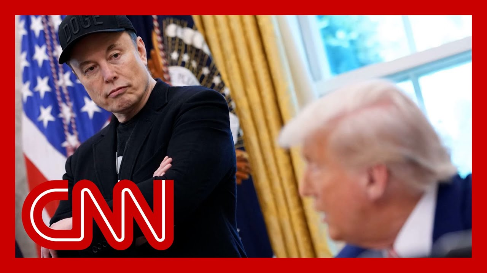

【特朗普：马斯克“并未真正离开”，尽管正式政府职务结束】
Summary: 马斯克正式结束白宫工作，但特朗普表示他仍将担任顾问角色。马斯克在任期间引发诸多争议，近期特斯拉业绩下滑，公众形象受损。尽管离开政府，他仍计划参与政治并继续经营旗下公司。
摘要： A long goodbye to Elon Musk.

⏱️ Estimated Reading Time: 16 min
A long goodbye to Elon Musk.
对埃隆·马斯克的漫长告别。
As the one time Doge chief officially ends his time working in the white House.
这位曾经的“狗狗币领袖”正式结束了在白宫的工作。
I have given it to some, but it goes to very special peop and I thought I'd give it to Elon as a presentation from our count Thank you, thank you, thank you.
我曾将它授予少数人，但它只属于非常特殊的人，我想把它作为我们国家的礼物送给埃隆。谢谢，谢谢，谢谢。
Take care of President Trump, handing Musk a golden key and pu quite a show for the cameras as Musk capped off what has been let's be real, a whirlwind tour as a, quote, special government employee, end.
特朗普总统向马斯克递上一把金钥匙，为镜头上演了一出好戏，为马斯克这段“特殊政府雇员”的旋风之旅画上句号。
Who can forget him on the stage in that dark MAGA hat and sungla.
谁能忘记他戴着黑色MAGA帽和墨镜登台的场景？
That was the chainsaw for democr He called it.
他称之为“民主的电锯”。
Or that time he tried to help a conservative candidate win a seat on the Wisc Supreme Court.
或是那次他试图帮助保守派候选人赢得威斯康星州最高法院席位。
He put on that cheesehead hat.
他戴上了奶酪头帽。
He handed out oversize million dollar checks.
他分发超大尺寸的百万美元支票。
But that effort was ultimately unsuccessful and most recently said that he i spending big amounts on campaign.
但这一努力最终失败，而他最近表示正投入巨额资金参与竞选。
But is today really a finer final farewell to politics?
但今天真的是他与政治的最终告别吗？
Elon is really not leaving.
埃隆并未真正离开。
He's going to be back and forth.
他会来回奔波。
I think I have a feeling, well, I expect to continue to provide whenever the president would like that advice.
我有预感，我预计会继续在总统需要时提供建议。
I hope so.
我希望如此。
If he's I mean, I'm, Yeah, it's I expect to remain a friend and, an advisor and, ce if there's anything the president wants me to do, I'm at the president's office.
如果……我是说，是的，我期望继续作为朋友、顾问，只要总统需要，我随时待命。
So the world's richest man seen there is now going to return ful time to his many multibillion do companies, including Space-X, which once again saw its massive Starship rocket explode this week.
这位世界首富将全面回归他的多家千亿级企业，包括SpaceX——其巨型星舰火箭本周再次爆炸。
That's the second time that's happened this year.
这已是今年第二次发生。
And he'll head back to Tesla, which of course became the target of much of this violence and van as Musk's political involvement dominated headlines earlier this.
他还将重返特斯拉，该公司因马斯克的政治活动成为舆论焦点，近期更遭遇暴力事件。
Last month, Tesla announced that its first q net income plummeted a staggering 71% compared to the year before.
上月特斯拉宣布第一季度净利润同比暴跌71%。
And Musk's own public perception has taken a similar downturn.
马斯克的公众形象也同步下滑。
The latest Marquette poll findin that 59% of Americans have a neg opinion of Elon Musk, just over say they're still fans of his.
最新马凯特民调显示，59%美国人对马斯克持负面看法，仅略高于仍支持他的人。
And so even as he ends one job, he has his hands extraordinarily full trying to turn things around, not making that mission any easier for Moscow.
即便结束政府工作，他仍忙于扭转局面，而《纽约时报》最新调查其涉嫌吸毒的报道让任务更难。
The New York Times this morning publishing a deep dive on his alleged use of potential of illegal drugs.
《纽约时报》今早发布深度调查，指控他可能使用非法药物。
Neither Musk nor his lawyer responded to the times request for comment, and CNN has reached out to his represent.
马斯克及其律师均未回应《纽约时报》，CNN也已联系其代表。
Asked about that today, Elon Musk attacked the times.
今日被问及此事时，马斯克抨击了《纽约时报》。
His credibility.
质疑其可信度。
But so, as Musk bids goodbye for now to Washington, the question really is was it wo.
但当马斯克暂别华盛顿时，真正的问题是：这一切值得吗？
And what's next?
接下来会怎样？
In a new interview with CBS, he indicated that leaving the white House behind might not be such a bad thing.
他在CBS采访中暗示，离开白宫未必是坏事。
I agree with much of what the administration but we have differences of opini.
我认同政府多数政策，但我们存在分歧。
you know, I, I the things that I I don't entirely agree with.
有些事我并非完全赞同。
but I it's difficult for me to bring that up in an interview because then it creates a bone of contention.
但访谈中难以提及，因这会引发争议。
So then I'm a little stuck in a bind where I'm like, well, I don't wa you know, speak out against the administration, but I don't want to.
于是我陷入两难：既不愿公开反对政府，又不想沉默。
Or also, I want to take responsibility for having the administration's.
或者说，我想为支持政府担责。
All right. Let's bring in Sanders.
好的，有请桑德斯。
Jeff Zeleny, he's live for us ou the white House, Jeff.
CNN驻白宫记者杰夫·泽勒尼正在连线。
so Trump said this isn't the end for Elon.
特朗普称这并非埃隆的终点。
I will say that my reporting sug that there are many Republicans on Capitol Hill who would prefer to keep control of Capitol Hill, who are more than happy to see Elon Musk exit, stage left.
但我的报道显示，许多希望维持国会控制的共和党人乐见马斯克离场。
but what's your understanding of he is parting ways at this point in his standing within the white.
你认为他此刻离开白宫的真实地位如何？
Well, Casey, look, I think there are many cabinet m and others who are also, grateful for what Elon Musk has done and pleased that he is leaving because there has been a bit of, competition with it.
凯西，部分内阁成员对其贡献心存感激，但也因存在竞争而乐见其离开。
There's no doubt about it.
这一点毋庸置疑。
For the president's time, first and foremost, at the at the very beginning of this administration, Elon Musk was someone, he wasn't just a special government employ.
在总统任期初期，马斯克不仅是特殊政府雇员。
He was the most special.
他是最特殊的存在。
He would travel with him on Air Force One.
他常乘空军一号同行。
He would go with him tomorrow.
随行海湖庄园。
Lago. Everywhere else.
出入各处。
He spent, some nights here at the white Ho the Lincoln Bedroom.
甚至留宿白宫林肯卧室。
so, look, he had a carte blanche pretty much anything he wanted.
他几乎拥有无限特权。
the question is, what does the, fallout in the, history books, short term and long term, say about to dodge all of the pr he made about cutting.
问题是历史将如何评价他关于削减开支的承诺落空。
first it was, 2 trillion, then 1 trillion, then significantly less than tha in government, spending have not, come to pass.
从2万亿到1万亿，最终远低于承诺的政府开支削减未能实现。
However, there has been a much d in the eyes of some inside the government to agencies by, cutting institutional, knowledge and long serving worke.
但部分政府人士认为，他通过裁减资深员工削弱了机构制度性知识。
The soft power, that, so many, talk about.
许多人谈论的“软实力”受损。
He is also a modernized a some, systems inside the gover.
他也现代化了部分政府系统。
So I think we will have to wait to see how much of those efforts have r.
这些改革的成效尚待观察。
But a lot of his long time employees are going to go with h.
但他的许多长期下属将随他离开。
Some are now embedded inside age there's no question about that.
部分人已扎根各机构。
But I think the bigger question the president is Elon Musk going to be a political, sounding board, if you will?
更关键的是：他未来会成为总统的政治顾问吗？
Is he going to be, giving, contributions to other Republican candidates?
会资助其他共和党候选人吗？
for all the, consternation on Capitol Hill, most Republicans were certainly eager to accept h political, contributions.
尽管国会山不满，多数共和党人曾热切接受他的政治献金。
Those are likely to, not be repe to the degree that they were las some $275 million Elon Musk spent to get the president.
但去年他为助选总统投入的2.75亿美元恐难再现。
So their relationship has not just been this year.
他们的关系不仅限于今年。
It was dating back to last summe certainly during the transition.
可追溯至去年夏天过渡期。
Elon, Elon Musk had a huge role in shaping this government during the transition. time.
马斯克在过渡期对政府架构影响深远。
So we shall see how the presiden sort of occupies with Adam.
且看总统如何维系这段关系。
But in the last several weeks, h his influence inside this administration has been wan.
但最近几周，他在政府内的影响力已减弱。
There's no doubt about that.
这是事实。
But today, one thing was clear.
但今日一事明朗：
Both men wanted a fond farewell.
双方想要体面告别。
And, of course, the president wanted to send off the world's richest man with a smile.
总统希望以笑容送别这位世界首富。
They are friends.
他们是朋友。
The question is how often and how close they will work together in the f.
问题是未来合作频率与紧密程度。
And that's something we don't have an answer to at th.
目前尚无答案。
Casey.
凯西。
Jeff Zeleny getting us started t.
杰夫·泽勒尼为我们开启报道。
Jeff, very grateful to see you.
杰夫，非常感谢。
Thank you very much.
非常感谢。
And joining us now to discuss further, white House National Economic Council Direct Kevin Hassett.
现在有请白宫国家经济委员会主任凯文·哈塞特进一步讨论。
sir, always grateful to have you on the program.
先生，感谢您参与节目。
Thank you very much for being he.
非常感谢您的到来。
There does seem to be some tensi between the mission that Elon Mu was on with Doge and the, quote unquote, big, beautiful bill that Musk was cri on the way out.
马斯克的“狗狗币使命”与他离任时批评的“大而美的法案”似有矛盾。
What is the right answer for the especially when the Congressiona Office says that the bill is goi trillions to the national debt?
当国会预算办公室称该法案将增加数万亿国债时，政府应如何应对？
Right. Well, first of all, I just want to say that I kind of disagree with a lot of the reporting just that I'm on the second floor of the West Wing.
首先，我不同意部分报道——我在白宫西翼二楼办公。
That's kind of the nerd floor.
那里是“技术宅”楼层。
And Elon was up there, too, and I worked really closely with all the way back to the 20th of.
埃隆也在那儿，我们自20日起紧密合作。
And I'm very, very fond of the g.
我非常欣赏他。
He's a really kind person.
他非常友善。
And everybody in the West Wing.
西翼所有人都如此认为。
he has time for,
他愿意花时间
He works harder than anyone I've ever seen.
他是我见过最勤奋的人。
He's there till wee hours of the and I'm going to miss him.
工作至凌晨，我会想念他。
I got to miss him a lot.
我会非常想念。
He's a very good person who had a big contribution.
他是做出巨大贡献的好人。
Now, what is the contribution?
那么贡献是什么？
You guys were just talking about.
你们刚才提到的
Well, one of them is that he's helped get visibility on stuff that government is doing.
他让政府浪费行为曝光。
That's very wasteful.
那些非常浪费。
And with Russ vote now over at, what we're doing is we're starti to roll up all of the accomplish that Elon made and send them into as packages up to the Hill so that Congress could look at the things that we think are wasteful and then stop spending money on.
随着投票结束，我们正汇总他的成果提交国会，以叫停浪费性支出。
And Elon said that he's confiden that we're going to get up to about $1 trillion in cuts.
埃隆自信能实现约1万亿美元削减。
And when I look at the things that we have been trained to res I could see how that's like a very reasonable expectation.
根据我们梳理的项目，这是合理预期。
So I think that he said that a wonderful colleague, I'm going to miss him.
他是出色的同事，我会想念他。
And he's got a heck of a lot of for America.
他为美国付出良多。
Now, you say that he's a wonderful colleague.
你说他是出色同事。
The times, of course, reporting this morning on extens drug use.
但《纽约时报》今早报道其涉嫌长期吸毒。
Did you ever witness Elon Musk under the influence of.
你见过他受药物影响吗？
Even close?
哪怕接近？
No, never.
从未。
Not once, not even once, though, not in a million years.
一次也没有，百万次也不会有。
And I could just say that he is a person who's so filled w that it's just a natural way tha and he's just been absolutely a blast to work with.
他精力充沛是天性，与他共事非常愉快。
And of course, there's no sign whatsoever or anything l.
且毫无吸毒迹象。
Did any of the personal drama that was reported make its way into the white Hous.
他的个人争议是否影响白宫？
We I never talked to him about personal drive, ever.
我们从不谈论私事。
I just talked to him about every technical issue.
只讨论技术问题。
I could tell you that just about every technical issue like we were was talking about spectrum in 60.
比如60GHz频谱等技术议题。
And whatever it is, Elon knows everything abo.
他无所不知。
He's one of the most remarkable I've ever seen.
是我见过最非凡的人。
He's the Thomas Edison of our da.
当代爱迪生。
Do you think his time in governm will benefit his companies from a regulatory perspective?
你认为他的从政经历会为公司带来监管便利吗？
I don't think that he ever thoug anything about his own personal.
他从未考虑个人利益。
He was just trying to make gover work better.
只想改善政府运作。
So he didn't stop wasting money.
阻止资金浪费。
And, you know, for example, he had no personal agenda whatso.
毫无个人企图。
I never saw anything like that.
我从未察觉此类行为。
It's completely, completely not.
完全没有。
In fact, he he just went around and helped us, all the cabinet secretaries.
事实上，他协助每位内阁部长。
And I was at the desk looking at council gain clarity and visibility on everything that the government's doing good.
我在办公桌前看他帮我们理清政府运作。
So he had, you know, he, he, he quit the fi.
他辞去原职
I think his t shirt said tech su.
他的T恤写着“技术支援”。
And he really was the best tech you could possibly have.
他是你能拥有的最佳技术顾问。
And I also got to say that that that he's a person.
我还要说
You talk about him as like the world's richest man.
你们称他为世界首富。
You realize that that he's not a person who acts like that.
但他毫无架子。
And so in the white House, he had like the most comically small office of anybody, anybody of the West Wing, you know, it's like sort of Harr.
他在白宫的办公室小得滑稽，像哈利·波特的储物间。
kind of size office.
那么大的办公室。
And so. So he's not about pretentious, he's about getting stuff done.
他不尚浮华，只重实效。
And that's why he's got so many great compa and why we were so glad to have when we could.
因此他创立众多伟大公司，我们也庆幸曾与他共事。
the cupboard under the stairs.
楼梯下的储物间。
I think that's probably what you are offering to there.
你想说的就是这个。
It wasn't under the stars, but it was about that size for s.
虽不在星空下，但大小差不多。
All right, enough room for a chair and a place to play video games.
够放椅子和玩游戏。
Was he playing video games in the white House?
他在白宫玩游戏吗？
He was ready to.
他随时准备着。
I didn't see hi.
但我没亲眼见过。
Okay.
好的。